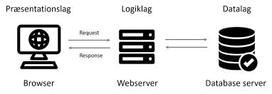
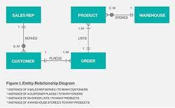
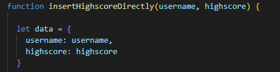
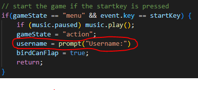

Projekt servere/databaser

3-lags arkitektur bruges til at holde overblikket over hvordan kommunikationen mellem mellem bruger, webserver og databaseserveren.
• Præsentationslag: Det øverste lag der håndterer modtagelse og præsentation af data. Dette lag er kendetegnet ved at være ”tæt” på brugeren af programmet.
• Logiklag: Det midterste lag der håndterer udvekslingen af data mellem præsentationslaget og datalaget.
• Datalag: Det nederste lag der opbevarer og håndterer data. Dette lag er også kendetegnet ved at være ”tæt” på computeren.

Entity relationship diagrams ERD-diagrammer er en visuel beskrivelse af indbyrdes relationer i et IT-system. De er gode til at skabe et overblik over et projekt. overstående billede er et eksempel.
Vi ville gerne lave en funktion der kunne gemme highscores i flabbybird spillet under et bestemt navn i databasen.
For at tilgå dataene i databasen skal man bruge f.eks. mongoDB. Serveren skal også startes.
Vi startede inde i "app" javascriptfilen med at lave en ny funktion "inserthighscore directly" som var en funktion der indsatte highscoren direkte fra det givne brugernavn i databasen istedet for den tidligere funktion "inserthighsocre" hvor man skulle skrive brugernavn i en promt og derefter highscore. Funktionen blev brugt på restartkey. (Se billede under)

Derefter brugte vi en promt på startkey så man kunne angive sit username når spillet startede som bliver husket til highscoren skal indsættes i databasen. (se billede under)

Med disse ændringer til spillet kan man gemme sine scores i databasen under det username man angiver i starten. Projektet ligger på navigationsbaren "Highscore"